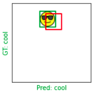
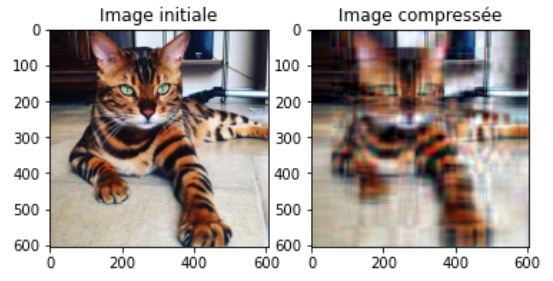
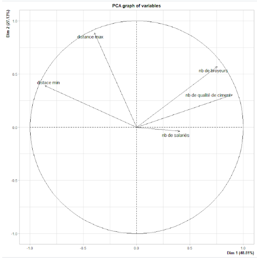
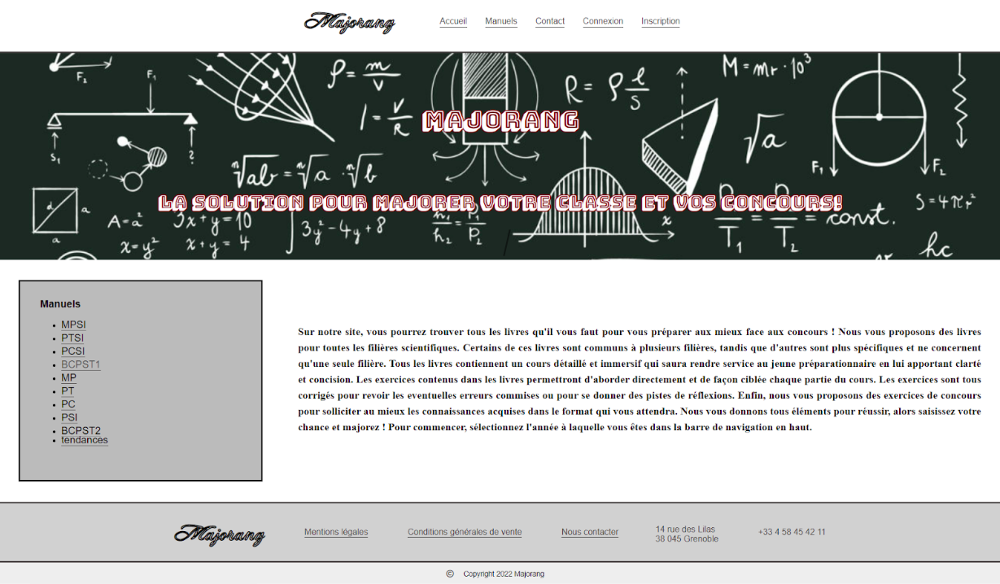
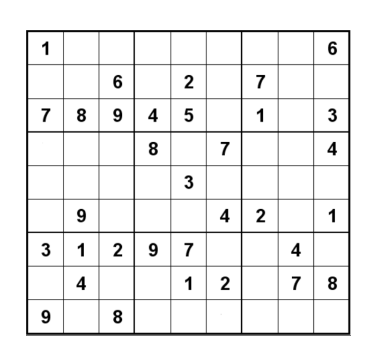

Projects
In addition to this portfolio that I completely coded on my own, I worked on the following few projects. This page is being updated.
Object localization with TensorFlow

- Creating labeled data with different emojis
- Creating and training a convolutional neural network with 2 outputs: the type of the emoji and its localization
- Using the inter over union metric to evaluate the model
Image compression with Single Value Decomposition

- Separating image channels
- Calculating low rank approximation for each channel
- Reconstructing the compressed image
- Comparing with original image
- Calculating and visualizing the PSNR (Peak Signal to Noise Ratio)
Cost optimization for a cement

- Linear optimization of transport and energy costs
- Using Python to create an application (tkinter library) to resolve the optimization problem depending of needs, stocks and buildings of the ciment plant (PuLP library)
- Processing of french cement plants data using PCA (Principal Component Analysis) with RStudio
Store website for textbooks

- Creating the website using HTML, CSS, PhP and JavaScript
- Using Wampserver and MySQL to manage users information
- Explaining my choices in a report
Sudoku resolution

- Writting functions to check if a number can be in a given cell in accordance with sudoku rules
- Writting a function to find empty cells
- Using these functions to solve sudoku grids with a backtracking algorithm